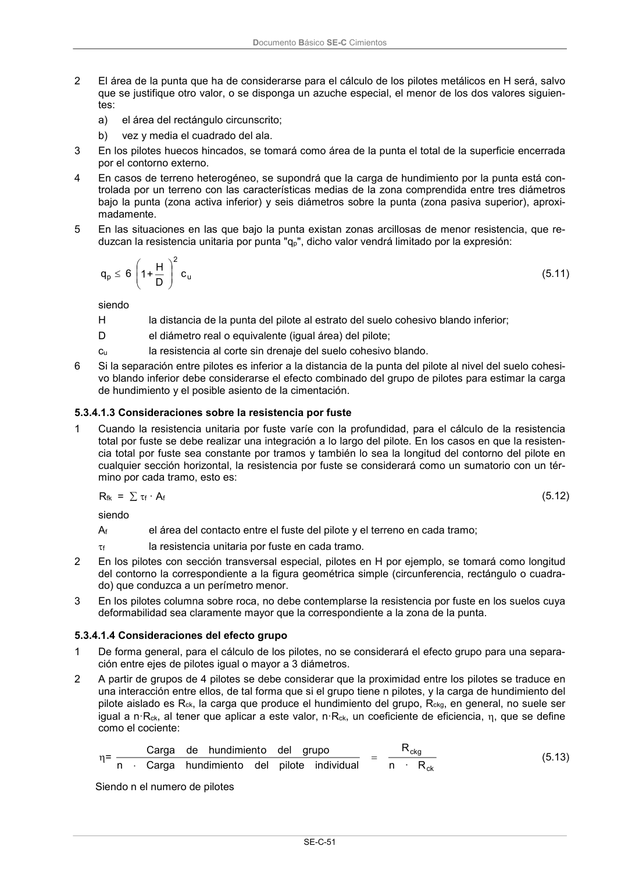

DB-SE-C · 5.3.4.1.2 Consideraciones sobre la resistencia por punta · versión 2019-12-20 · capa oficial
Formatos: JSON compacto · Markdown · PDF fuente
Ámbito del documento · texto del ámbito · documento y tablas
ID técnico a0128 · PDF pág. 55-56 · jerarquía no validada por persona · contrastado con el literal de la página 55 (candidato tipográfico); no validado por persona · padre: raíz
5.3.4.1.2 Consideraciones sobre la resistencia por punta 1 El área de la punta a utilizar en el cálculo será igual al área de la sección transversal del pilote al nivel de la punta (pilotes de extracción) o a la proyección sobre el plano transversal del área del azuche en pilotes hincados. Para pilotes huecos (sección en forma de corona circular), o para perfi- les metálicos hincados sin azuche, habrá que calcular el área de la punta equivalente según 5.1.2.2.2. Documento Básico SE-C Cimientos SE-C-51 2 El área de la punta que ha de considerarse para el cálculo de los pilotes metálicos en H será, salvo que se justifique otro valor, o se disponga un azuche especial, el menor de los dos valores siguien- tes: a) el área del rectángulo circunscrito; b) vez y media el cuadrado del ala. 3 En los pilotes huecos hincados, se tomará como área de la punta el total de la superficie encerrada por el contorno externo. 4 En casos de terreno heterogéneo, se supondrá que la carga de hundimiento por la punta está con- trolada por un terreno con las características medias de la zona comprendida entre tres diámetros bajo la punta (zona activa inferior) y seis diámetros sobre la punta (zona pasiva superior), aproxi- madamente. 5 En las situaciones en las que bajo la punta existan zonas arcillosas de menor resistencia, que re- duzcan la resistencia unitaria por punta "qp", dicho valor vendrá limitado por la expresión: u 2 p c D H + 1 6 q (5.11) siendo H la distancia de la punta del pilote al estrato del suelo cohesivo blando inferior; D el diámetro real o equivalente (igual área) del pilote; cu la resistencia al corte sin drenaje del suelo cohesivo blando. 6 Si la separación entre pilotes es inferior a la distancia de la punta del pilote al nivel del suelo cohesi- vo blando inferior debe considerarse el efecto combinado del grupo de pilotes para estimar la carga de hundimiento y el posible asiento de la cimentación. 5.3.4.1.3 Consideraciones sobre la resistencia por fuste 1 Cuando la resistencia unitaria por fuste varíe con la profundidad, para el cálculo de la resistencia total por fuste se debe realizar una integración a lo largo del pilote. En los casos en que la resisten- cia total por fuste sea constante por tramos y también lo sea la longitud del contorno del pilote en cualquier sección horizontal, la resistencia por fuste se considerará como un sumatorio con un tér- mino por cada tramo, esto es: Rfk = f · Af (5.12) siendo Af el área del contacto entre el fuste del pilote y el terreno en cada tramo; f la resistencia unitaria por fuste en cada tramo. 2 En los pilotes con sección transversal especial, pilotes en H por ejemplo, se tomará como longitud del contorno la correspondiente a la figura geométrica simple (circunferencia, rectángulo o cuadra- do) que conduzca a un perímetro menor. 3 En los pilotes columna sobre roca, no debe contemplarse la resistencia por fuste en los suelos cuya deformabilidad sea claramente mayor que la correspondiente a la zona de la punta.

PDF fuente redistribuible: copia fiel enlazada en esta página (SHA256 verificado).